lorenz_partial_25d_additive_mse_obsnoise001__lc_sweepProject: Lorenz_INDpartial_N25_D1_NormTrue_T3__JacobianODE
Launched: 2026-04-16T05:55:10Z
Completed: 2026-04-16T09:20:14Z
Outcome: complete_clean
Git: latent-JacobianODE @ 4b6bc1f
Expected runs: 9
lorenz_partial_25d_additive_mseDescription
Partial-obs Lorenz: x-coordinate only (observed_indices=[0]), n_delays=25, delay_spacing=1. Encoder input 25-D, z_dyn 3-D, z_null 22-D with kl_null_weight=0. Additive coupling encoder, joint training, reconstruction on most_recent only. Loss: plain MSE (not gennMSE). obs_noise_scale=0 fixed; LC weight swept.
Hypothesis
On partial-obs, loss terms live on very different scales: the decoded-trajectory / reconstruction losses score a 25-D delay vector (but only the most-recent frame via reconstruction_mode), while the latent prediction loss lives in z_dyn's 3-D space. MSE treats these on the same additive scale, which may be implicitly over- or under-weighting one term relative to the other compared to gennMSE's per-term-normalized version. Prediction: MSE may reach a different (possibly worse) LC optimum than gennMSE, or may simply shift the optimal LC — either way, head-to-head with the gennMSE partial-obs sweep tells us how much gennMSE's rescaling actually matters in this setting.
Success criteria
Swept axes (1): training.lightning.loop_closure_weight
Chosen run (by best_traj_loss): ngghq4z1 — traj_loss=0.00031, MASE=0.5376, R²=0.9991, LC loss=7.620, epoch=169.0
Swept-axis values at chosen run: training.lightning.loop_closure_weight=0
Runs analyzed: 9 (expected 9)
| run_idx | run_id | training.lightning.loop_closure_weight |
best_traj_loss | best_MASE | R² | LC loss | epoch |
|---|---|---|---|---|---|---|---|
| 0 | ngghq4z1 |
0 | 0.00031 | 0.5376 | 0.9991 | 7.620 | 169.0 |
| 1 | sv6d27lt |
1.0e-06 | 0.00032 | 0.5450 | 0.9991 | 3.359 | 169.0 |
| 2 | y7vh7mh3 |
1.0e-05 | 0.00034 | 0.5626 | 0.9991 | 0.657 | 169.0 |
| 3 | n39bpmdc |
1.0e-04 | 0.00036 | 0.5787 | 0.9990 | 0.073 | 169.0 |
| 4 | 37u3yaye |
0.001 | 0.00042 | 0.6082 | 0.9988 | 0.006 | 166.0 |
| 5 | prxsbac5 |
0.01 | 0.00050 | 0.6503 | 0.9986 | 0.001 | 150.0 |
| 8 | zslbniwo |
10 | 0.00055 | 0.7012 | 0.9985 | 0.000 | 156.0 |
| 7 | 2b98rsxt |
1 | 0.00057 | 0.7121 | 0.9984 | 0.000 | 141.0 |
| 6 | s6wapklo |
0.1 | 0.00060 | 0.7188 | 0.9983 | 0.000 | 119.0 |
| Criterion | Verdict | Note |
|---|---|---|
| Best run's leading Lyapunov exponent > 0 (chaos recovered) | Unknown | |
| Best run's predicted Lyapunov spectrum within ~40% of empirical | Unknown | |
| Differs from gennMSE partial-obs run either in best-LC location or best spectrum MSE, giving a clear signal | Unknown | |
| val/trajectory_r2_score > 0.85 at the best configuration | Pass | Best R² = 0.9991; threshold > 0.85 |
Automated verdicts use simple numeric-threshold parsing and may mis-classify qualitative criteria. The Discussion section below takes precedence.
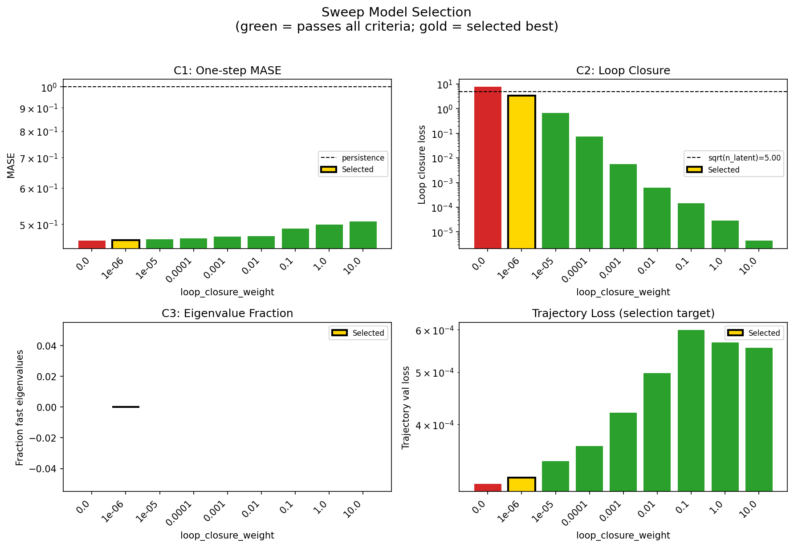
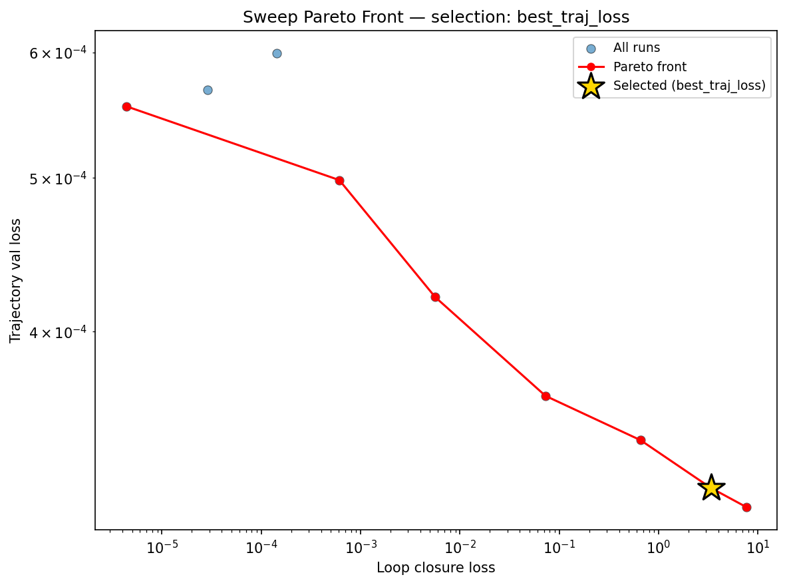
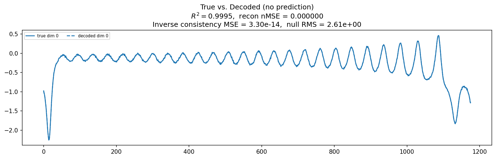
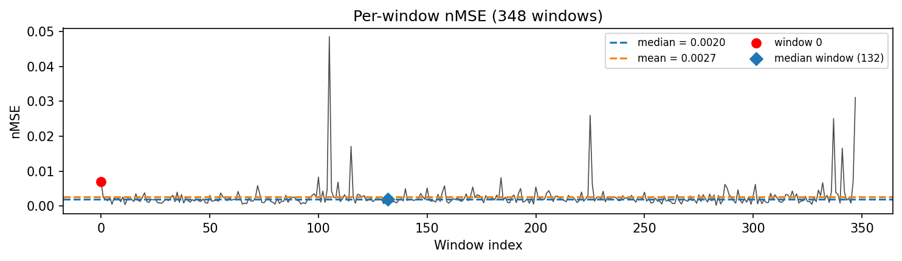
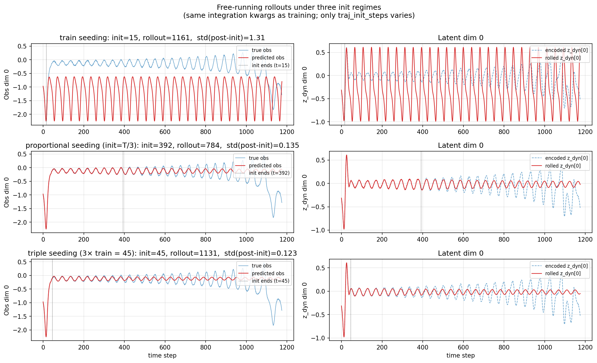
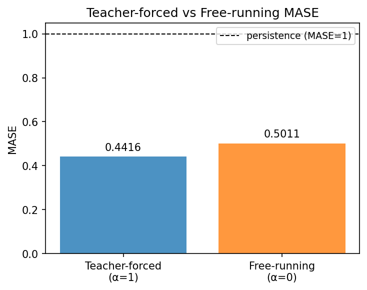
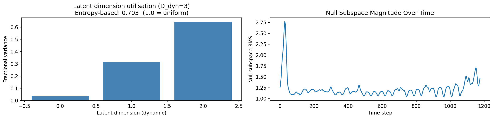
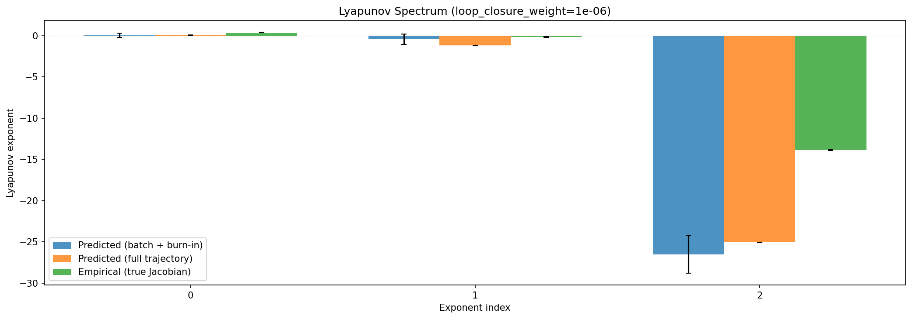
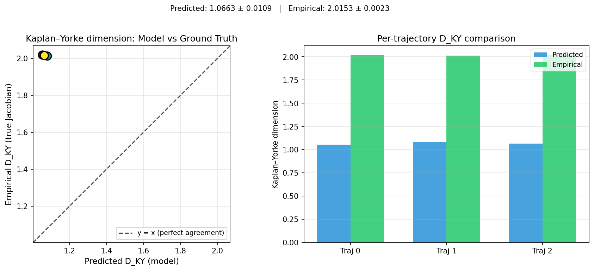
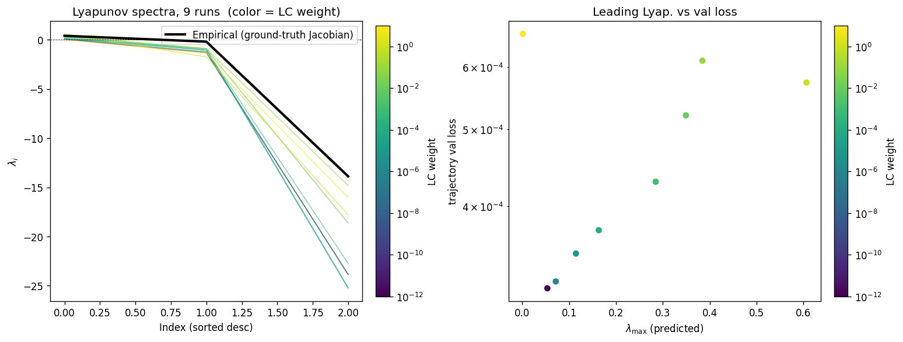
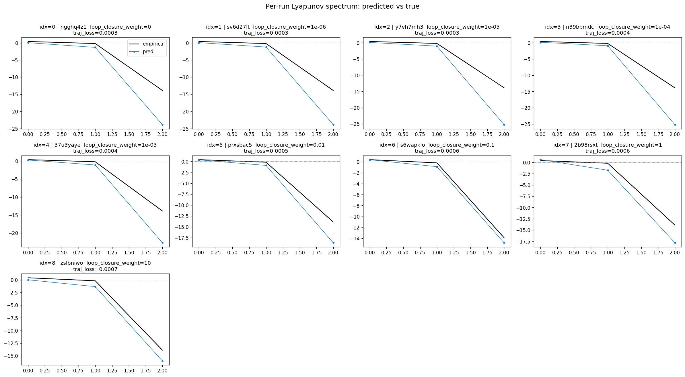
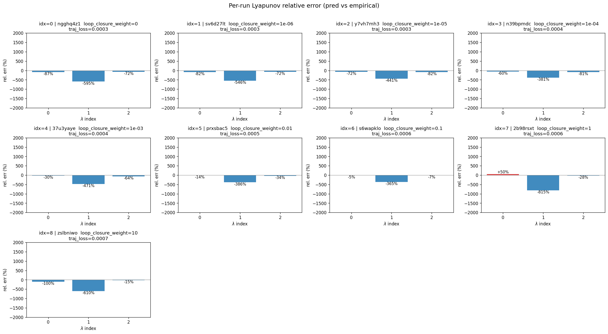
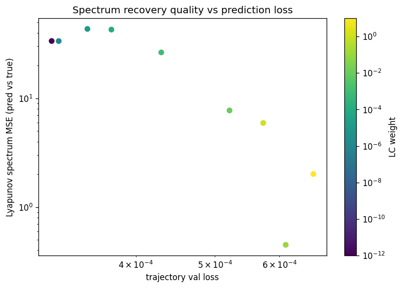
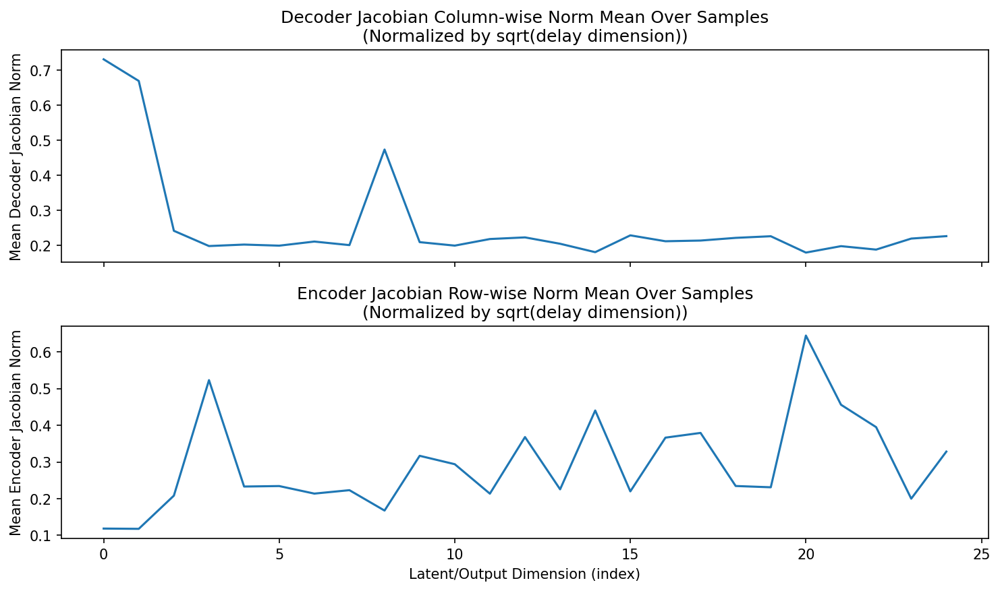
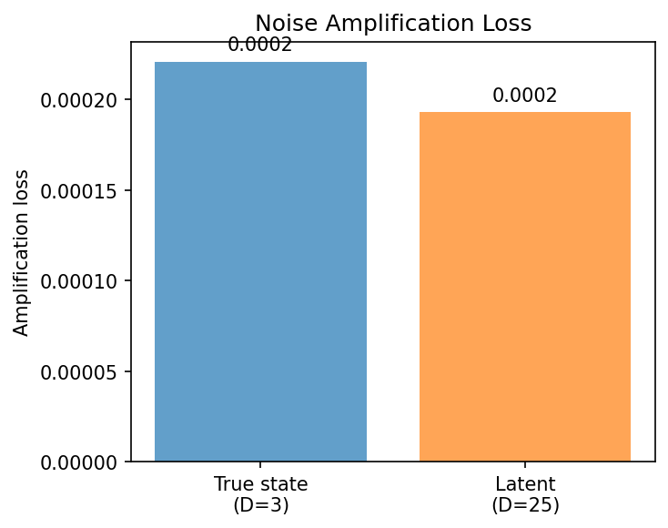
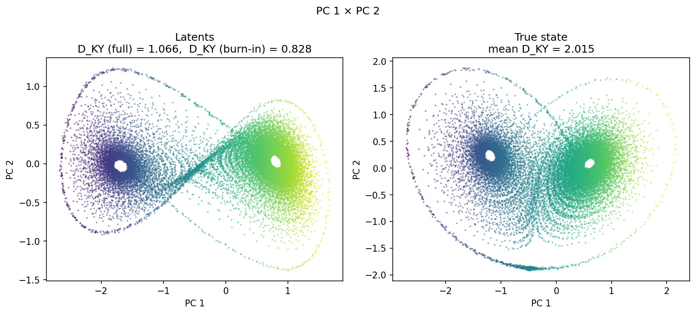
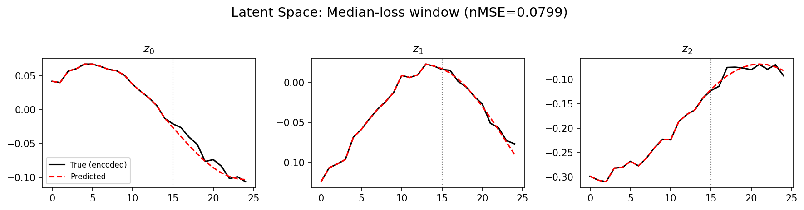
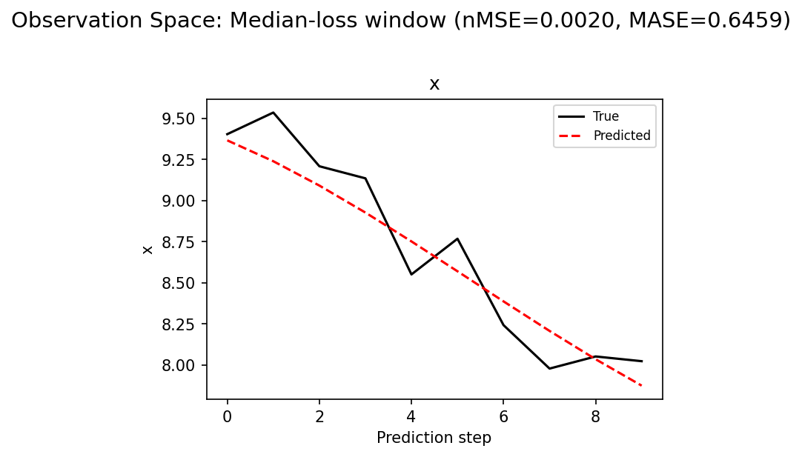
(to be written)
run_analytics stdoutrun_analyticsNo run_id provided — selecting best run from group 'lorenz_partial_25d_additive_mse_obsnoise001__lc_sweep' ...
Found 9 total runs in JacobianODE/Lorenz_INDpartial_N25_D1_NormTrue_T3__JacobianODE (group=lorenz_partial_25d_additive_mse_obsnoise001__lc_sweep)
All runs (state, loop_closure_weight, tangent_entropy_weight, kl_dyn_weight):
ngghq4z1: state=finished, lc=0.0, te=0.0, kl_dyn=0.0
sv6d27lt: state=finished, lc=1e-06, te=0.0, kl_dyn=0.0
y7vh7mh3: state=finished, lc=1e-05, te=0.0, kl_dyn=0.0
n39bpmdc: state=finished, lc=0.0001, te=0.0, kl_dyn=0.0
37u3yaye: state=finished, lc=0.001, te=0.0, kl_dyn=0.0
prxsbac5: state=finished, lc=0.01, te=0.0, kl_dyn=0.0
s6wapklo: state=finished, lc=0.1, te=0.0, kl_dyn=0.0
2b98rsxt: state=finished, lc=1.0, te=0.0, kl_dyn=0.0
zslbniwo: state=finished, lc=10.0, te=0.0, kl_dyn=0.0
slurm_timeout_min not found in any run config — falling back to 180 min
Including ngghq4z1 (lc=0.0): use_all_runs=True (state=finished)
Including sv6d27lt (lc=1e-06): use_all_runs=True (state=finished)
Including y7vh7mh3 (lc=1e-05): use_all_runs=True (state=finished)
Including n39bpmdc (lc=0.0001): use_all_runs=True (state=finished)
Including 37u3yaye (lc=0.001): use_all_runs=True (state=finished)
Including prxsbac5 (lc=0.01): use_all_runs=True (state=finished)
Including s6wapklo (lc=0.1): use_all_runs=True (state=finished)
Including 2b98rsxt (lc=1.0): use_all_runs=True (state=finished)
Including zslbniwo (lc=10.0): use_all_runs=True (state=finished)
Found 9 effectively-done sweep runs:
loop_closure_weight=0.0, tangent_entropy_weight=0.0, kl_dyn_weight=0.0 -> run_id=ngghq4z1
loop_closure_weight=1e-06, tangent_entropy_weight=0.0, kl_dyn_weight=0.0 -> run_id=sv6d27lt
loop_closure_weight=1e-05, tangent_entropy_weight=0.0, kl_dyn_weight=0.0 -> run_id=y7vh7mh3
loop_closure_weight=0.0001, tangent_entropy_weight=0.0, kl_dyn_weight=0.0 -> run_id=n39bpmdc
loop_closure_weight=0.001, tangent_entropy_weight=0.0, kl_dyn_weight=0.0 -> run_id=37u3yaye
loop_closure_weight=0.01, tangent_entropy_weight=0.0, kl_dyn_weight=0.0 -> run_id=prxsbac5
loop_closure_weight=0.1, tangent_entropy_weight=0.0, kl_dyn_weight=0.0 -> run_id=s6wapklo
loop_closure_weight=1.0, tangent_entropy_weight=0.0, kl_dyn_weight=0.0 -> run_id=2b98rsxt
loop_closure_weight=10.0, tangent_entropy_weight=0.0, kl_dyn_weight=0.0 -> run_id=zslbniwo
n_dims=25, n_latent=25, n_dyn=3, dt=0.0150
run=ngghq4z1: DiagnosticMetrics(one_step_mase=0.46019017696380615, loop_closure_loss=7.620031356811523, fast_eigenvalue_fraction=0.0, trajectory_val_loss=0.0003101699985563755) (from cache, n_batches=100)
run=sv6d27lt: DiagnosticMetrics(one_step_mase=0.46126407384872437, loop_closure_loss=3.3585357666015625, fast_eigenvalue_fraction=0.0, trajectory_val_loss=0.0003188869741279632) (from cache, n_batches=100)
run=y7vh7mh3: DiagnosticMetrics(one_step_mase=0.4635782241821289, loop_closure_loss=0.656792163848877, fast_eigenvalue_fraction=0.0, trajectory_val_loss=0.00034177646739408374) (from cache, n_batches=100)
run=n39bpmdc: DiagnosticMetrics(one_step_mase=0.4653404951095581, loop_closure_loss=0.07261452823877335, fast_eigenvalue_fraction=0.0, trajectory_val_loss=0.00036445766454562545) (from cache, n_batches=100)
run=37u3yaye: DiagnosticMetrics(one_step_mase=0.4694344103336334, loop_closure_loss=0.005616755690425634, fast_eigenvalue_fraction=0.0, trajectory_val_loss=0.0004207075689919293) (from cache, n_batches=100)
run=prxsbac5: DiagnosticMetrics(one_step_mase=0.471291720867157, loop_closure_loss=0.000610381830483675, fast_eigenvalue_fraction=0.0, trajectory_val_loss=0.0004984594997949898) (from cache, n_batches=100)
run=s6wapklo: DiagnosticMetrics(one_step_mase=0.4895893335342407, loop_closure_loss=0.00014221546007320285, fast_eigenvalue_fraction=0.0, trajectory_val_loss=0.0005990432109683752) (from cache, n_batches=100)
run=2b98rsxt: DiagnosticMetrics(one_step_mase=0.49968740344047546, loop_closure_loss=2.8875105272163637e-05, fast_eigenvalue_fraction=0.0, trajectory_val_loss=0.0005684752832166851) (from cache, n_batches=100)
run=zslbniwo: DiagnosticMetrics(one_step_mase=0.506904661655426, loop_closure_loss=4.352719315647846e-06, fast_eigenvalue_fraction=0.0, trajectory_val_loss=0.000554867961909622) (from cache, n_batches=100)
Ranking method: best_traj_loss
Best run ID: sv6d27lt
Best loop_closure_weight: 1e-06
Best tangent_entropy_weight: 0.0
Best kl_dyn_weight: 0.0
Best traj loss: 0.000319
Criteria applied: ['C1', 'C2', 'C3']
Surviving: 8 / 9
Auto-selected run_id: sv6d27lt
======================================================================
PARETO FRONTIER RUNS (7 runs)
======================================================================
Run ID LC Loss Traj Val Loss
------------ -------------- --------------
zslbniwo 0.000004 0.000555
prxsbac5 0.000610 0.000498
37u3yaye 0.005617 0.000421
n39bpmdc 0.072615 0.000364
y7vh7mh3 0.656792 0.000342
sv6d27lt 3.358536 0.000319 <-- selected
ngghq4z1 7.620031 0.000310
======================================================================
RANKING METHOD COMPARISON (over 8 survivors)
======================================================================
Method Run ID LC Loss Traj Val Loss
---------------------- ------------ -------------- --------------
best_traj_loss sv6d27lt 3.358536 0.000319 <-- active
pareto_knee prxsbac5 0.000610 0.000498
geo_rank zslbniwo 0.000004 0.000555
minimax_rank 37u3yaye 0.005617 0.000421
geo_log_score sv6d27lt 3.358536 0.000319
minimax_log_score 37u3yaye 0.005617 0.000421
======================================================================
Loading run sv6d27lt from JacobianODE/Lorenz_INDpartial_N25_D1_NormTrue_T3__JacobianODE ...
Train dataset shape: torch.Size([25322, 25, 25])
Validation dataset shape: torch.Size([8057, 25, 25])
Test dataset shape: torch.Size([3453, 25, 25])
Train trajectories dataset shape: torch.Size([22, 1176, 25])
Validation trajectories dataset shape: torch.Size([7, 1176, 25])
Test trajectories dataset shape: torch.Size([3, 1176, 25])
Loading checkpoint epoch=169-step=34000.ckpt...
Computing reconstruction ...
Computing MASE ...
Teacher-forced MASE: 0.4416
Free-running MASE: 0.5011
Computing latent utilization ...
Entropy-based utilization: 0.703
Null subspace mean RMS: 1.239336e+00
Computing Lyapunov exponents ...
Computing full-trajectory Lyapunov (3 test trajs, T=1176) ...
Predicted Lyapunov exponents (batch+burn-in, 128 windowed trajs):
λ_1 = +0.0450 ± 0.2670
λ_2 = -0.4431 ± 0.6440
λ_3 = -26.5091 ± 2.2571
Predicted Lyapunov exponents (full-length, 3 test trajs):
λ_1 = +0.0797 ± 0.0166
λ_2 = -1.2001 ± 0.0166
λ_3 = -25.0504 ± 0.0329
Empirical Lyapunov exponents (mean ± std):
λ_1 = +0.3846 ± 0.0251
λ_2 = -0.1716 ± 0.0444
λ_3 = -13.8799 ± 0.0398
Mean KY dim (predicted): 1.066 ± 0.011
Mean KY dim (empirical): 2.015 ± 0.002
Mean KY dim (burn-in): 0.828 ± 0.672
Computing prediction windows ...
Windows: 348 — nMSE min=0.0002, median=0.0020, mean=0.0027, max=0.0486
Computing long trajectory prediction ...
Computing encoder/decoder Jacobians ...
encoder_jacobian: (128, 25, 25)
decoder_jacobian: (128, 25, 25)
Computing amplification loss ...
Amplification loss — True state: 0.000221
Amplification loss — Latent: 0.000193